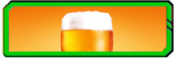
Drunken Fury
Passive Skill. You can fly into a drunken rage 0 times per day by drinking alcohol as a bonus action. While raging, you gain the following benefits if you aren't wearing heavy armor:- You have advantage on Strength checks and Strength saving throws.
- When you make a melee weapon attack, you gain a bonus to the damage roll equal to 0.
- You have resistance to bludgeoning, piercing, and slashing damage.
0
Drunken Master
While raging, you can perform an additional uncanny dodge each round without expending a reaction.Sobering Realization
As a reaction, you can end the rage early to reroll the result of any intelligence, wisdom, or charisma saving throw, adding 0 to the result of the second roll. As an action, you may also end your rage early to end any ongoing charmed or frightened effect.Day Drinker
Drinking a potion is now a bonus action instead of an action. Additionally, you may now start raging after drinking a potion, not just an alcoholic beverage.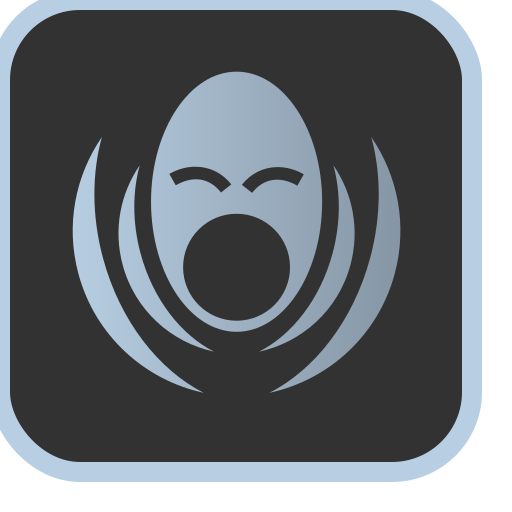
Berserking
While raging, you can attack one additional time whenever you take the attack action.Punch Drunk
Once per day, you can enter into a rage immediately whenever you drop to half health. This does not count towards your rages per day.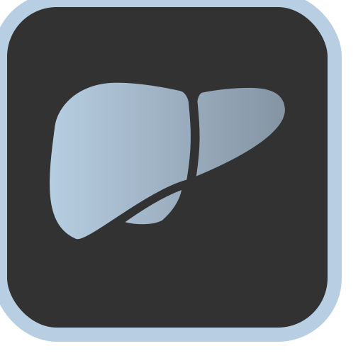
Golden Liver
While raging, you restore hp equal to 1d8+con modifier at the start of each turn. Drinking any alcholic beverage also heals you for the same amount.Critical Drinker
You can end a rage early to guarantee an attack is a critical hit.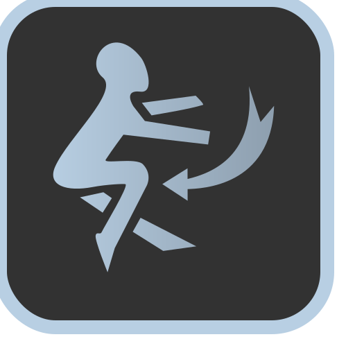
Cheat Death
While raging, whenever you would drop to 0 health, you completely avoid the attack instead and end your rage early. If you cannot avoid the incoming damage for whatever reason, you instead drop to 1 hit point.Slippery Bastard
While raging, you are under the effects of Freedom of Movement. For the duration, the target’s movement is unaffected by difficult terrain, and spells and other magical effects can neither reduce the target’s speed nor cause the target to be paralyzed or restrained. The target can also spend 5 feet of movement to automatically escape from nonmagical restraints, such as manacles or a creature that has it grappled. Finally, being underwater imposes no penalties on the target’s movement or attacks.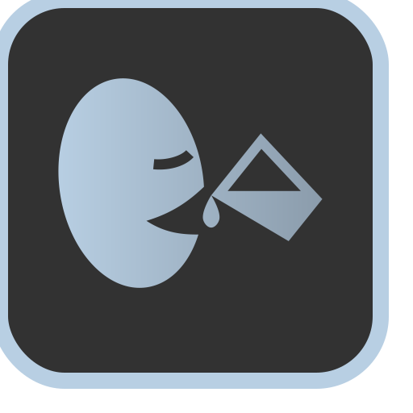
Binge Drinker
It now takes two uses of abilities that would end your rage to end your rage.Your Drunken Fury abilities also improve.
0
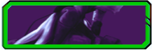
Assassination
Passive Skill. The range of your blindsense increases to 0 feet. Blindsense. If you are able to hear, you are aware of the location of any hidden or invisible creature within 0 feet of you.0
Cunning Strike
You can make a single melee attack as a bonus action.Stick and Move
Once per turn, whenever you perform a sneak attack, you can take a disengage action for free.Crowd Control
Your hordebreaker applies whenever you have 2 or more targets in melee range, even if they are on opposite sides of you.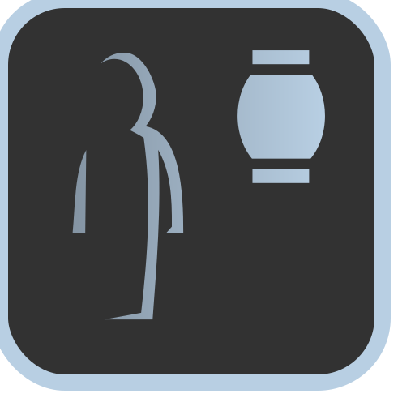
Ambush
You always get a surprise round at the start of combat. If ambushed by enemies, you alone can act during the enemy's surprise round.Double Trouble
You now have two bonus actions per turn.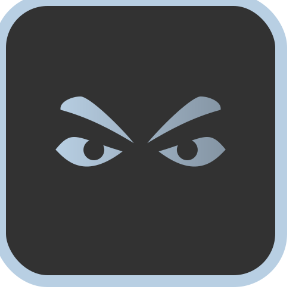
Premeditation
By studying a target as an action for 1 round, your first attack against them in the following turn is a critical strike. If this attack misses, you lose the buff and subsequent attacks are resolved as normal.Deathblow
Whenever you attack and hit a creature that is surprised, it must make a Constitution saving throw (DC 8 + your Dexterity modifier + your proficiency bonus). On a failed save, maximize and double the total damage of your attack against the creature.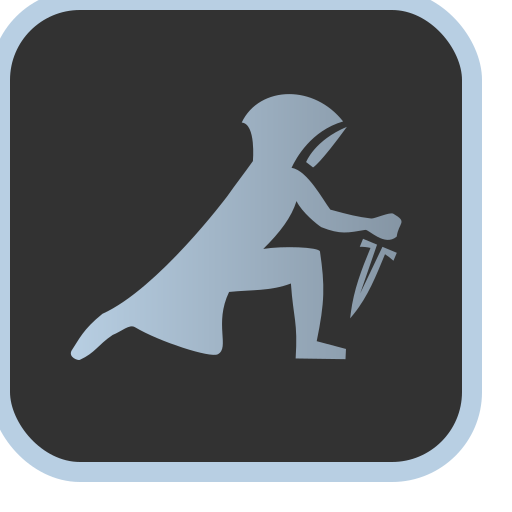
Assassinate
Once per combat, whenever initiative is rolled, designate a target to assassinate. Your first attack against this target is an automatic critical hit. Whenever that target gets incapaciated, you instantly get a turn.Mutilate
You are now able to sneak attack twice per turn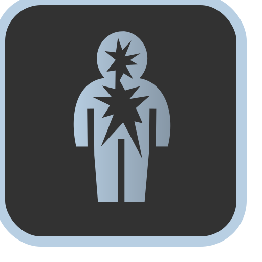
Vital Strike
Whenever you perform a sneak attack, you can impose one of the following conditions on the target. The DC of this ability is equal to 8 + dexterity modifier + proficiency bonus.- Cripple (strength save): You attack the target's arms, causing them to attack with disadvantage until the end of your next turn. If this attack is a critical strike, they are crippled for 1 minute. At the end of each of their turns, they may roll again to end cripple early.
- Hamstring (strength save): You hamstring the target, reducing their speed by half and granting disadvantage on dexterity saves until the end of your next turn. If this attack is a critical strike, their speed is reduced for 1 minute. At the end of each of their turns, they may roll again to end hamstring early.
- Blind (dexterity save): You blind the target creature with your attack, lasting until the end of your next turn. If this attack is a critical strike, they are blinded for 1 minute. At the end of each of their turns, they may roll again to end blindness early.
- Silence (dexterity save): You silence the target until the end of your next turn, preventing them from speaking. If this attack is a critical strike, they are silenced for 1 minute. At the end of each of their turns, they may roll again to end silence early.
- Expose Armor (constitution save): You expose the armor of the target, reducing its AC by 3 until the end of your next turn. If this attack is a critical strike, their armor is reduced for 1 minute instead. At the end of each of their turns, they may roll again to end expose armor early.
- Hemorrhage (constitution save): You cause the target to bleed continuously, dealing damage equal to your minimum sneak attack roll. The bleeding target takes damage at the start of their turn and rolls at the end of their turn to see if they are still bleeding. If this attack is a critical hit, the damage dealt by this bleed doubles.
0
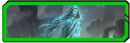
Ghostly Form
Active Skill. You may now enter ghostly form as a bonus action, the same effect as the one granted by the Ghost Step tattoo, 0 times per day.0
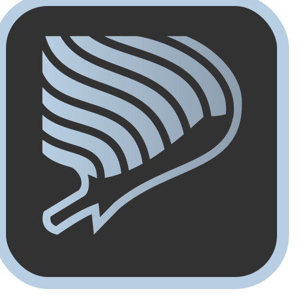
Ghost Blade
While in ghostly form, your attacks are treated as force damage for the purpose of bypassing damage resistance.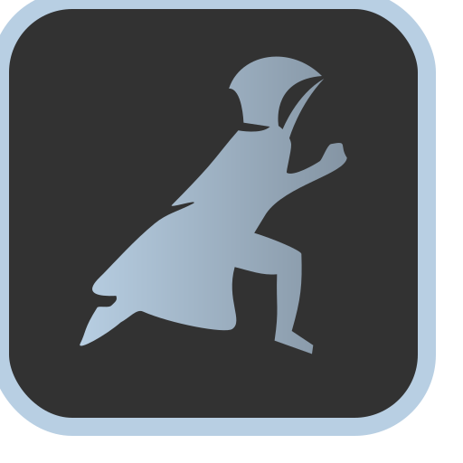
Cloak of Shadows
While in ghostly form, you have advantage against all spell effects.Wraith Body
While in ghostly form, no attack has advantage against you and you gain immunity to critical hits.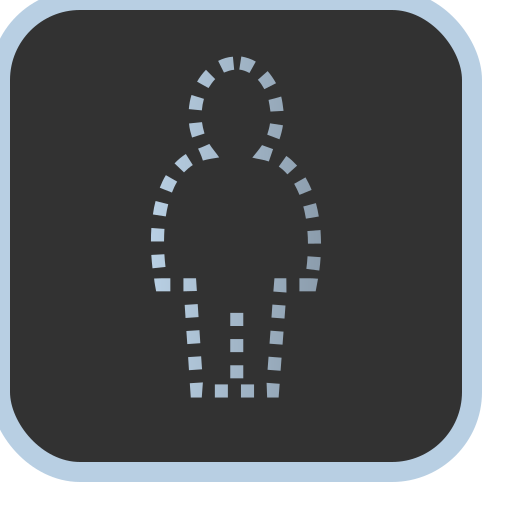
Vanish
Your ghostly form now grants invisiblity as the spell Greater Invisibility, in addition to its other effects.Seal Fate
Whenever you score a critical hit or whenever you incapacitate a target, you recover one use of your ghostly form.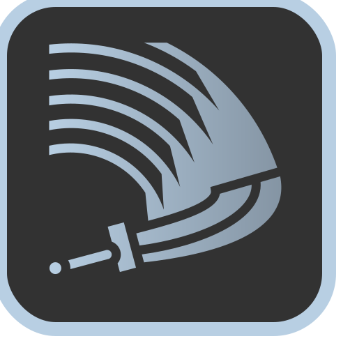
Phantom Hit
Any time you enter ghostly form, you can make one single melee attack for free.Reaper
Whenever you incapacitate a target, you gain another use of sneak attack this turn and immediately slip into ghostly form. This does not count against your uses of ghostly form.Phantom Step
Whenever you enter ghostly form, you may now teleport a distance up to 30 feet as the spell Misty Step.Fade
Your ghostly form now confers immunity to nonmagical attacks, not just resistance. Furthermore, as a reaction, you can now enter ghostly form to avoid an incoming attack.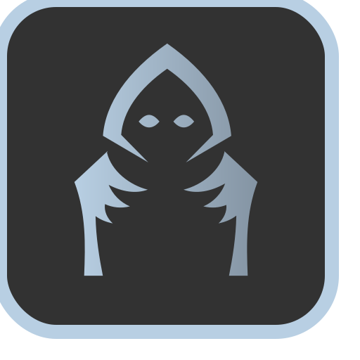
Dancing with Death
Once per day, you can start Dancing with Death for 1 minute, enabling you to enter and exit ghostly form without expending any uses of ghostly form. Additionally, when Dancing with Death, your sneak attacks hit harder, dealing 0d6 more sneak attack damage.
0